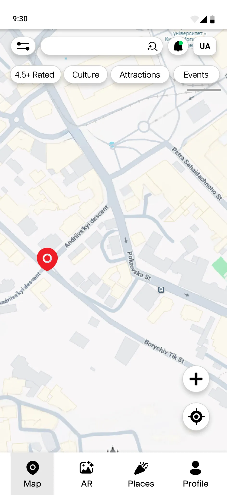
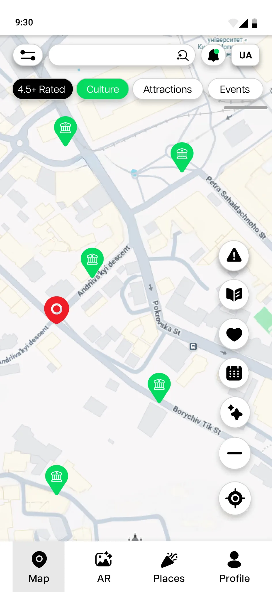
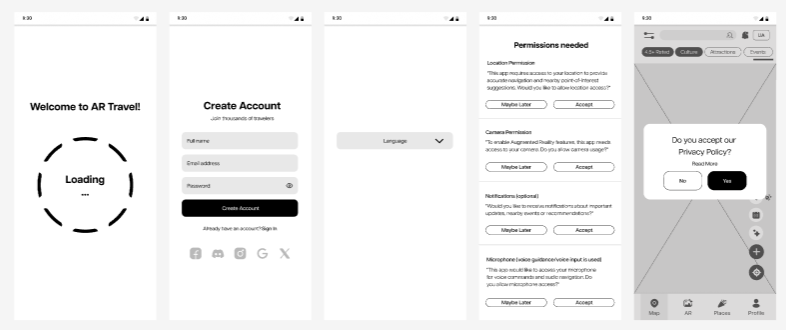
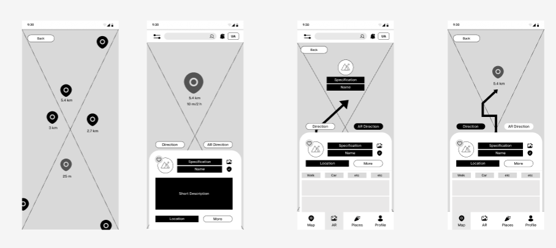
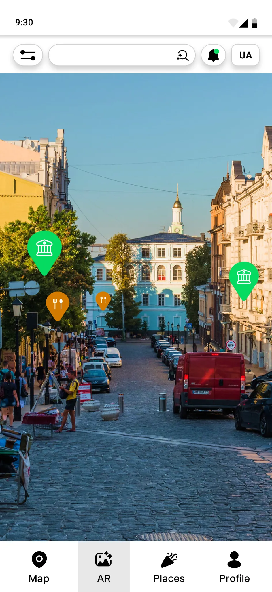
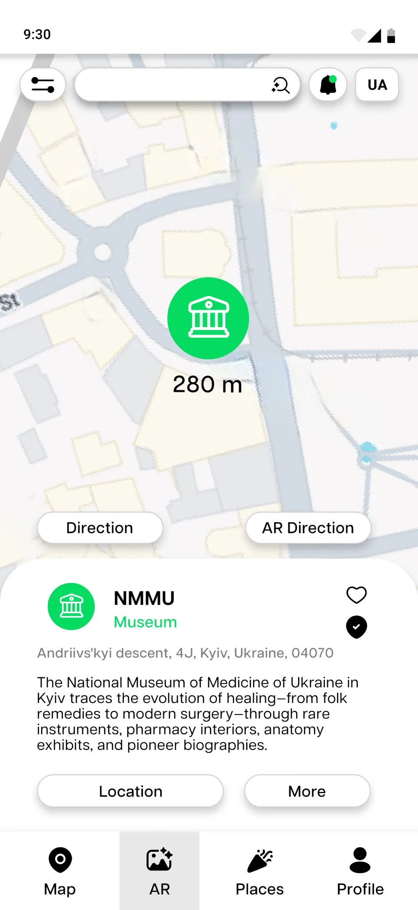
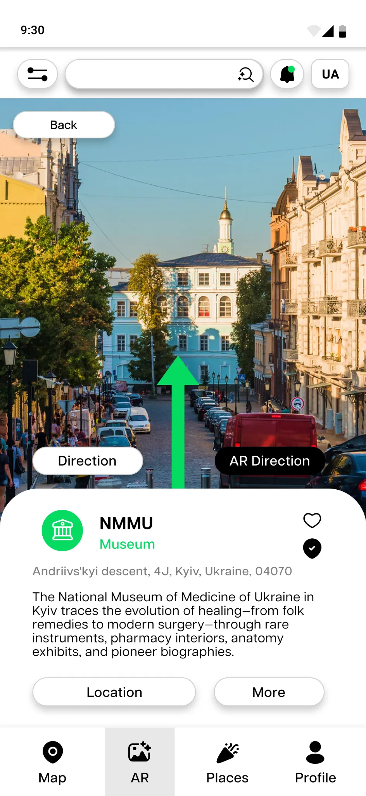

ScopeHigh-fidelity iOS concept · not a shipped AR system
01 / The challenge
The city was rich. The information was fragmented.
Visitors need to orient themselves, read unfamiliar information, and decide what is worth exploring—often with unreliable connectivity. Locals face a different friction: interesting places and events are scattered across maps, listings, and social channels.
A
Visitor lens
Confidence before complexity
The visitor persona foregrounded language barriers, unfamiliar streets, and the need for guidance that can be understood at a glance.
Empathy map 02Behaviours, influences, pains, and gains
02 / The insight
Navigation and discovery are two moments of the same journey.
The strongest design decision was not choosing AR over a map. It was letting each view do the job it handles best while preserving the selected destination.
Central decision
Look around when context matters. Look down when overview matters.
Camera overlays connect digital markers to the street ahead. A conventional map keeps routes familiar and scannable. Both modes belong to the same path instead of competing for control.
Street contextAR view
Same destination
Route overviewMap view
Core journey
One destination stays present through every decision.
01DiscoverBrowse the map or look through the camera.
02PreviewOpen useful place context without losing orientation.
03ChooseContinue with AR guidance or a conventional map.
04ArriveKeep the destination and distance visible through the route.
Complete user flowThe full decision structure, visible at a glance.
03 / The product system
One journey. Three clear jobs.
The interface moves from broad exploration to specific context, then to action. Each stage reduces the number of decisions without hiding the alternative navigation mode.
01 / Discover
Filter before the map becomes noise.
Category chips turn a dense city map into a more intentional set of choices. The active filter is reinforced through colour and marker content.


01
Progressive information
A nearby marker opens a compact preview before asking someone to commit to a detailed page or route.
02
Destination continuity
Place name, distance, and mode choice stay connected as the user moves from discovery into directions.
03
Readable alternatives
The AR and map options are explicit. Neither is hidden behind an unfamiliar gesture or a separate workflow.
04 / The revisit
Thirty hours spent on the decisions that changed the whole system.
The portfolio revisit concentrated on navigation and menu clarity, stronger spacing and hierarchy, and additions that made the product concept feel more complete rather than simply more decorated.
From structure to interface
Wireframes settled the sequence before visual polish.
Early layouts tested the handoff from map marker to place preview, detailed information, and route choice. The final UI keeps that structure while giving the key actions more contrast.



Camera discoveryNearby places are attached to the street view.

Mode choiceThe alternative remains visible at the decision point.

Route contextDirection, distance, and destination share one view.
Visual system
Neutral foundation. Signals only when they matter.
Black and white hold the information architecture together. Vivid green identifies exploration and positive wayfinding cues; red is reserved for location and attention. The result keeps a complex map interface visually coherent.
A coherent navigation concept—not a claim of a shipped AR product.
The final deliverable is a high-fidelity Figma concept supported by personas, empathy maps, a user flow, wireframes, and a targeted portfolio revisit. It demonstrates how discovery, place information, and two navigation modes can function as one system.